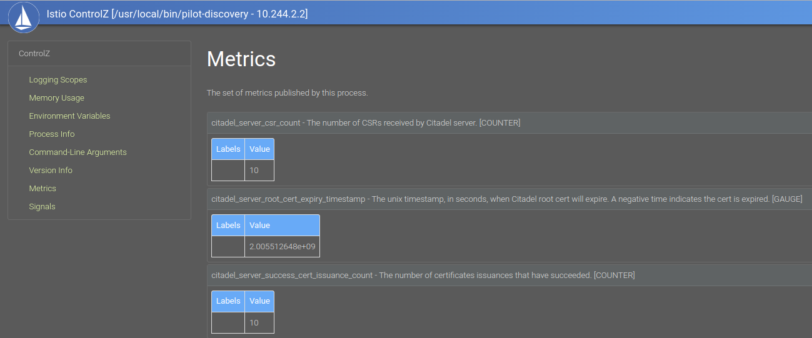

The PKI/xDS workload integration and certificate generation can be complex, this is executed since forever from the Envoy and pilot-agent, Istio CA offers the SVID x509 certificates for workload identification. For this sidecar version, the pilot-agent (that bootstrap the sidecar) sends the Kubernetes API token and a CSR, istiod validates the token and on success signs the certifcate returning the response, the agent uses SDS to configure the envoy, for more details see Appendix C from Istio In Action.
The ztunnel config_dump can be achieved by curl on http://localhost:15000/config_dump, on this example
the default ca_address is istiod service on 15012 port
{
"config" {
"ca_address": "https://istiod.istio-system.svc:15012",
"ca_root_cert": {
"File": "./var/run/secrets/istio/root-cert.pem"
},
"xds_address": "https://istiod.istio-system.svc:15012",
"xds_root_cert": {
"File": "./var/run/secrets/istio/root-cert.pem"
},
"xds_on_demand": false,
"fake_ca": false,
},
"certificates": [
{
"identity": "spiffe://cluster.local/ns/istio-system/sa/default",
"state": "Available",
"ca_cert": [
{
"pem": "-----BEGIN CERTIFICATE-----\nMIICezCCAWOgAwIBAgIRAP8JePgRMVctsN5ODWGReMkwDQYJKoZIhvcNAQELBQAw\nGDEWMBQGA1UEChMNY2x1c3Rlci5sb2NhbDAeFw0yMzA3MjMyMjUzMTlaFw0yMzA3\nMjQyMjU1MTlaMAAwWTATBgcqhkjOPQIBBggqhkjOPQMBBwNCAAQflxE7v8JJsph9\n29t/gf7L24o3jxfXj4Zz4Im9F3k00/7pEny7FxQby8f8pJy8oM+rVRLYmRxD64vO\n0MN4isPao4GiMIGfMA4GA1UdDwEB/wQEAwIFoDAdBgNVHSUEFjAUBggrBgEFBQcD\nAQYIKwYBBQUHAwIwDAYDVR0TAQH/BAIwADAfBgNVHSMEGDAWgBQVGuGZItNOyxnG\n7Xc0lT65wHhKMjA/BgNVHREBAf8ENTAzhjFzcGlmZmU6Ly9jbHVzdGVyLmxvY2Fs\nL25zL2lzdGlvLXN5c3RlbS9zYS9kZWZhdWx0MA0GCSqGSIb3DQEBCwUAA4IBAQBQ\n4/qL+tFrnuGVisi86furPxwNRmwInoweJwRBfLl/VQEalpXzCXbLCZuKLYdBrcL4\nSw2qFE1PWYmaDOGqcVN9HNx0OCY6SvHAnqV4NFDjzbdB/CVFhAhW5Sbkg7vVOlBI\nNBx96d4oMjnGVvyeXnnMoOn8HFGf/e0mtRSp8aP+agPetN2EpowKO4F/tCYImxS2\n7iq/CQwe8HkTtAM7v+AUC26NKqtRuqJbCkvmMd/JoTmxAPr7yKjw6lIP9Rf8jDeL\npvvFEY4dSFxaOBm/O7NspryGHZamKjijGnSfLXIJkdhAWh+Cc5KrfUmLNd/i87kG\nT/x9GuidXmCsZBPmXC2Q\n-----END CERTIFICATE-----\n",
"serial_number": "339002323139937996997990357496333695177",
"valid_from": "2023-07-23T22:53:19Z",
"expiration_time": "2023-07-24T22:55:19Z"
}
],
"cert_chain": [
{
"pem": "-----BEGIN CERTIFICATE-----\nMIIC/TCCAeWgAwIBAgIRAPfBaOGONn5h80zqgRMEooEwDQYJKoZIhvcNAQELBQAw\nGDEWMBQGA1UEChMNY2x1c3Rlci5sb2NhbDAeFw0yMzA3MjMyMjUwNDhaFw0zMzA3\nMjAyMjUwNDhaMBgxFjAUBgNVBAoTDWNsdXN0ZXIubG9jYWwwggEiMA0GCSqGSIb3\nDQEBAQUAA4IBDwAwggEKAoIBAQCSBwI43dBsthRlLeMNskGuLX0ziK1MIjJtK59h\nI5Nz23DIJcVy4mfsFOaIrLpHLhGg0SDon9guTAu50ueYwXD2u6F70ugN9pFTm4HS\n3PFFrlFoIkFFz3zMnd98AX0e5nk4all7TOK0q1Na8oh3wDhLyvdKD/MFgvhvbJJq\n5+SO2ppHIoY03JEYTkaRldCNmj3/31XDgQM8VrsL80Q7PxXd08ClUlfxtFmKMGax\nBLQOHkCVMToP6cOrBNfB+WJ/50zzrSqa4IDKQO3Wx0wPoimmk1m5tvC7/0XQ7L9Z\neYTKlv4QplMWmbtHoLqt8wL/r2XzlC3DClWjxP/XoEX+Ze1ZAgMBAAGjQjBAMA4G\nA1UdDwEB/wQEAwICBDAPBgNVHRMBAf8EBTADAQH/MB0GA1UdDgQWBBQVGuGZItNO\nyxnG7Xc0lT65wHhKMjANBgkqhkiG9w0BAQsFAAOCAQEAWq5OGrCRDc5pSYJW8TtR\nfb0ke0uhEmZH8cytbRGRmTCsaMi+BQRCMP1iJqw8rLxT6FzIhaj7ggK1M0AwZ0GF\n3DZM2Kr16spcuGdLte1X/RduiTfLXs/6toGLw1ATfK87igbKsCz7QGgiVJDjDRvj\nrri5XjjIbw3ZTjlIPhTNWjvnzdNHZ/Px4s/AILnxgByoeey6vnvQ3Fb9P3vvb+P9\nvAVe7CgoHxn1fOcPhpT9ofNMr3FIk5rze9lJ2wRWj1x+iQCYKp3Atrfuv/7XmJnG\n5PXFr1PaaO2GxEGlxk9HrlpoJ735qUruaZRrvEV3ZIN/3ICypPNa2pM2eslB7Hky\nwQ==\n-----END CERTIFICATE-----\n",
"serial_number": "329323555493519538036679630491320885889",
"valid_from": "2023-07-23T22:50:48Z",
"expiration_time": "2033-07-20T22:50:48Z"
}
]
}
]
}
The first interesting to see is the CA root-cert.pem used by the XDS root cert and CA root cert.
This is mounted from the root CA exitent on istio-ca-root-cert
Certificate:
Data:
Version: 3 (0x2)
Serial Number:
f7:c1:68:e1:8e:36:7e:61:f3:4c:ea:81:13:04:a2:81
Signature Algorithm: sha256WithRSAEncryption
Issuer: O = cluster.local
Validity
Not Before: Jul 23 22:50:48 2023 GMT
Not After : Jul 20 22:50:48 2033 GMT
Subject: O = cluster.local
Subject Public Key Info:
Public Key Algorithm: rsaEncryption
Public-Key: (2048 bit)
Modulus:
...
Exponent: 65537 (0x10001)
X509v3 extensions:
X509v3 Basic Constraints: critical
CA:TRUE
X509v3 Subject Key Identifier:
15:1A:E1:99:22:D3:4E:CB:19:C6:ED:77:34:95:3E:B9:C0:78:4A:32
The second part where the certificates exists, they are the SVID from the workload API, executing the following command from a ztunnel can print the actual certificate value:
kubectl -n istio-system exec -it ztunnel-5f4qm -- curl localhost:15000/config_dump | jq -r .certificates\[0\].ca_cert\[0\].pem | openssl x509 -text
As you can note the SPIFFEID is spiffe://cluster.local/ns/istio-system/sa/default used for the default service account
this is set on Subject Alternative Name property of the cert.
Certificate:
Data:
Version: 3 (0x2)
Serial Number:
ff:09:78:f8:11:31:57:2d:b0:de:4e:0d:61:91:78:c9
Signature Algorithm: sha256WithRSAEncryption
Issuer: O = cluster.local
Validity
Not Before: Jul 23 22:53:19 2023 GMT
Not After : Jul 24 22:55:19 2023 GMT
Subject:
Subject Public Key Info:
Public Key Algorithm: id-ecPublicKey
Public-Key: (256 bit)
pub:
04:1f:97:11:3b:bf:c2:49:b2:98:7d:db:db:7f:81:
fe:cb:db:8a:37:8f:17:d7:8f:86:73:e0:89:bd:17:
79:34:d3:fe:e9:12:7c:bb:17:14:1b:cb:c7:fc:a4:
9c:bc:a0:cf:ab:55:12:d8:99:1c:43:eb:8b:ce:d0:
c3:78:8a:c3:da
ASN1 OID: prime256v1
NIST CURVE: P-256
X509v3 extensions:
X509v3 Key Usage: critical
Digital Signature, Key Encipherment
X509v3 Extended Key Usage:
TLS Web Server Authentication, TLS Web Client Authentication
X509v3 Basic Constraints: critical
CA:FALSE
X509v3 Authority Key Identifier:
15:1A:E1:99:22:D3:4E:CB:19:C6:ED:77:34:95:3E:B9:C0:78:4A:32
X509v3 Subject Alternative Name: critical
URI:spiffe://cluster.local/ns/istio-system/sa/default
For the configuration file setting the default istiod service for Ztunnel on port 15012 when its in-cluster
let default_istiod_address = if std::env::var(KUBERNETES_SERVICE_HOST).is_ok() {
"https://istiod.istio-system.svc:15012".to_string()
} else {
"https://localhost:15012".to_string()
};
let xds_address = validate_uri(empty_to_none(
parse(XDS_ADDRESS)?
.or(pc.discovery_address)
.or_else(|| Some(default_istiod_address.clone())),
))?;
A WorkloadStore encapsulates all information about workloads in the mesh.
#[derive(serde::Serialize, Default, Debug)]
pub struct WorkloadStore {
/// workloads is a map of workload network addresses to workloads
workloads: HashMap<NetworkAddress, Arc<Workload>>,
/// workloads is a map of workload UIDs to workloads
workloads_by_uid: HashMap<String, Arc<Workload>>,
/// policies maintains a mapping of ns/name to policy.
pub(super) policies: HashMap<String, Authorization>,
// policies_by_namespace maintains a mapping of namespace (or "" for global) to policy names
pub(super) policies_by_namespace: HashMap<String, HashSet<String>>,
}
A handler for the protobuf XdsWorkload dispatches the insert_workload on update.
The ProxyStateUpdater updates the ProxyState from XDS events, and not only
dispatch a prefetch_cert as we are going to see next, as it saves the workload
in the data structure.
The main thread dispatches a build_with_cert starting the ProxyStateManager triggering
the XDS request.
impl Handler<XdsWorkload> for ProxyStateUpdater {
fn handle(&self, updates: Vec<XdsUpdate<XdsWorkload>>) -> Result<(), Vec<RejectedConfig>> {
let handle = |res: XdsUpdate<XdsWorkload>| {
match res {
XdsUpdate::Update(w) => self.insert_workload(w.resource)?,
XdsUpdate::Remove(name) => self.remove(&name),
}
Ok(())
};
handle_single_resource(updates, handle)
}
}
impl ProxyStateUpdater {
pub fn insert_workload(&self, w: XdsWorkload) -> anyhow::Result<()> {
// Convert the workload.
let workload = Workload::try_from(&w)?;
...
// Prefetch the cert for the workload.
self.cert_fetcher.prefetch_cert(&workload);
// Lock and upstate the stores.
let mut state = self.state.write().unwrap();
state.workloads.insert_workload(workload)?;
while let Some(endpoint) = endpoints.pop() {
state.services.insert_endpoint(endpoint);
}
}
}
The call to the SecretManager asynchronously is made to prefetch it from istiod CA passing the identity,
the SecretMaanger is a wrapper around CaClient.
impl CertFetcher for CertFetcherImpl {
fn prefetch_cert(&self, w: &Workload) {
if self.should_prefetch_certificate(w) {
if let Err(e) = self.tx.try_send(w.identity()) {
info!("couldn't prefetch: {:?}", e)
}
}
}
}
impl Workload {
pub fn identity(&self) -> Identity {
Identity::Spiffe {
trust_domain: self.trust_domain.to_string(),
namespace: self.namespace.clone(),
service_account: self.service_account.clone(),
}
}
}
The cert_manager(SecretManager).fetch_certificate_pri trigger the start_fetch when instantiated,
to actually post the request.
impl CertFetcherImpl {
fn new(cfg: &config::Config, cert_manager: Arc<SecretManager>) -> Self {
let (tx, mut rx) = mpsc::channel::<Identity>(256);
// Spawn a task for handling the pre-fetch requests asynchronously.
tokio::spawn(async move {
while let Some(workload_identity) = rx.recv().await {
match cert_manager
.fetch_certificate_pri(&workload_identity, Warmup)
.await
{
Ok(_) => debug!("prefetched cert for {:?}", workload_identity.to_string()),
Err(e) => error!(
"unable to prefetch cert for {:?}, skipping, {:?}",
workload_identity.to_string(),
e
),
}
}
});
Self {
proxy_mode: cfg.proxy_mode.clone(),
local_node: cfg.local_node.clone(),
tx,
}
}
}
The loop on Worker on manager.rs manages the certificate updates in the list.
The control plane provides a pilot-discovery interface called Controlz.
istioctl dashboard controlz deployment/istiod.istio-system
It’s possible to analyze the number of calls and metrics for citadel

If you want to go deeper on Istiod (out of our scope here), starting by the metrics can be a good call
// CreateCertificate handles an incoming certificate signing request (CSR). It does
// authentication and authorization. Upon validated, signs a certificate that:
// the SAN is the identity of the caller in authentication result.
// the subject public key is the public key in the CSR.
// the validity duration is the ValidityDuration in request, or default value if the given duration is invalid.
// it is signed by the CA signing key.
func (s *Server) CreateCertificate(ctx context.Context, request *pb.IstioCertificateRequest) (
*pb.IstioCertificateResponse, error,
) {
s.monitoring.CSR.Increment()
am := security.AuthenticationManager{Authenticators: s.Authenticators}
caller := am.Authenticate(ctx)
if caller == nil {
s.monitoring.AuthnError.Increment()
return nil, status.Error(codes.Unauthenticated, "request authenticate failure")
}